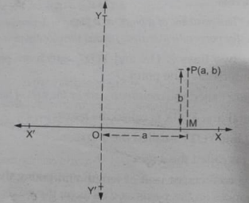
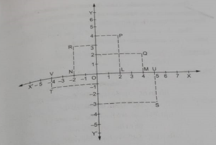

The French mathematician Rene Descartes in 1637 introduced the Cartesian system of coodinates for describing the position of a point in a plane. This idea has given rise to an important branch of mathematics, known as Coodinate Geometry.
A pair of number a and b listed in a specific order with a at the first place and b at the seconds place is calaled an ordered pair (a, b). Note that (a, b) is not equal to (b, a). Thus, (2, 3) is one ordered pair and (3, 2) is another ordered pair.
We represent each point in a plane by means of an ordered pair of real numbers, called coordinates of that point.
The branch of mathematics in which geometric problems are solved through algebra by using the coordinate system is known coordinate geometry.
The position of point in a plane is determined with reference to two fixed mutually perpendicular line, called the coordinate axes.
Let us draw two line X'OX YOY' which are perpendicular to each other and intersect at the point O.
These lines are called the coordinate axes or the axes of reference. The horizontal line X'OX is called the x-axis. The vertical line YOY' is called the y-axis. The point O is called the origin. We can fix a convenient unit of length and taking the origin as zero, mark equal distances on the x-axis as well as on the y-axis.
The distances measured along OX and OY are taken as positive and those along OX' and OY' are taken as negative.
Let P be a point in a plane. Let the distance of P from the y-axis = a units. And, the distance of P from the x-axis = b units. Then, we say that the coordinates of P are (a, b). a is called the x-coordinate or abscissa of P. b is called the y-coordinate or ordinate of P.
Let X'OX and YOY' be the coordinate axes. These axes divide the plane of the paper into four regions, called quadrants. The regoins XOY, YOX', X'OY' and Y'OX are respectively known as the first, second, third and fourth quadrants. Using the convention of signs, we have the signs of the coordinates in various quadrants given below.
| Region | Quadrant | Nature of x and y | Signs of coordinates |
|---|---|---|---|
| XOY | I' | x > 0, y > 0 | (+,+) |
| YOX' | II | x < 0, y > 0 | (-,+) |
| X'OY' | III | x < 0, y < 0 | (-,-) |
| Y'OX | IV | x > 0, y < 0 | (-, -) |
NOTE Any point lying on the x-axis or y-axis does not lie in any quadrant.
Example 1: Draw the lines X'OX and YOY' as axes on the plane of a graph paper and plot the points given below.
Solution:
Let X'OX and YOY' be the coordinate axes.
Fix a convenient unit of length and starting from O, mark equal distances on OX, OX', OY, and OY'. Use the convention signs.
(i) Starting from O, take +5 units on the x-axis and then +3 units on the y-axis to obtain the point A(5,3).
(ii) Starting from O, take -3 units on the x-axis and then +2 units on the y-axis to obtain the point B(-3,2).
(iii) Starting from O, take -5 units on the x-axis and then -4 units on the y-axis to obtain the point C(-5,-4).
(iv) Starting from O, take 2 units on the x-axis and then units on the y-axis to obtain the point D(2, -6).
Example 2:In which quadrants do the given points lie?
Solution:
(i) Points of the type (+, -) lie in the 4th quadrant.
Hence, the point (4, -2) lies in the quadrant IV.
(ii) Points of the type (-,+) lie in the 2nd quadrant.
Hence, the point (-3,7) lies in the quadrant II.
(iii) Points of the type (-, -) lie in the 3rd quadrant.
Hence, the point (-1, 1) lies in the quadrant III.
(iv) Points of the type (+, +) lie in the 1st quadrant.
Hence, the point (3,6) lies in the quadrant I.
Example 3:Write down the coordinates of each of the points P, Q, R, S and T as shown in the figure given below.

Solution:
Draw perpendiculars PL, QM, RN, SU and TV on the x-axis.
(i) The distance of P from the y-axis = OL = 2 units.
The distance of P from the x-axis = LP = 4 units.
Hence, the coordinates of P are (2,4).
(ii) The distance of Q from the y-axis = OM = 4 units
The distance from Q from the x-axis = MQ = 2 units.
Hence the coordinates of Q are (4, 2).
(iii) The distance of R from the y-axis = ON = 2 units.
The distance of R from the x-axis = NR = 3 units.
Hence, the coordinates of R are (-2, 3).
(iv) The distance of S from the y-axis = OU = 5 units.
The distance of S from the x-axis = US = -3 units.
Hence the coordinates of S are (5, -3).
(v) The distance of T from the y-axis = OV = -4 units.
The distance of T from the x-axis = VT = -1 units.
Hence the coordinates of S are (-4, -1).